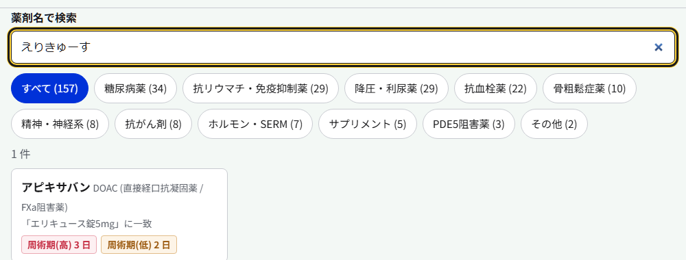
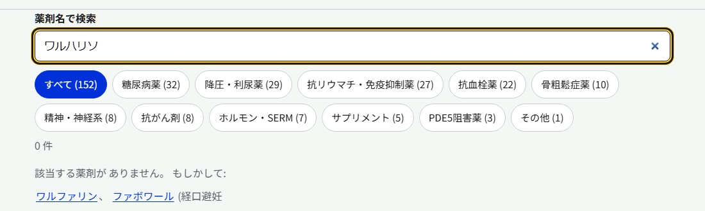
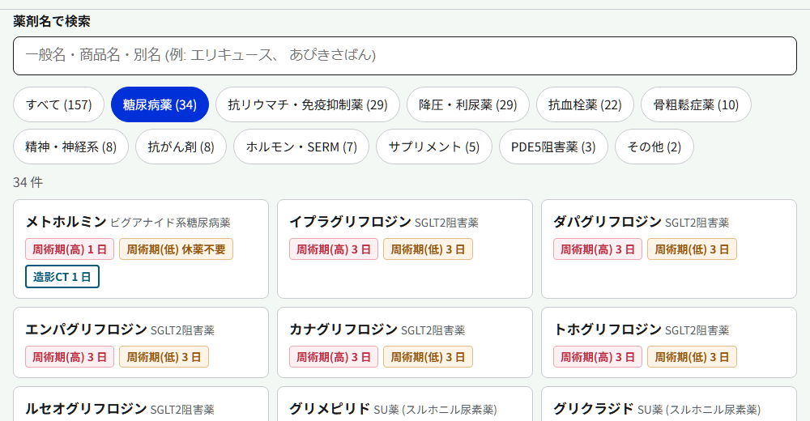
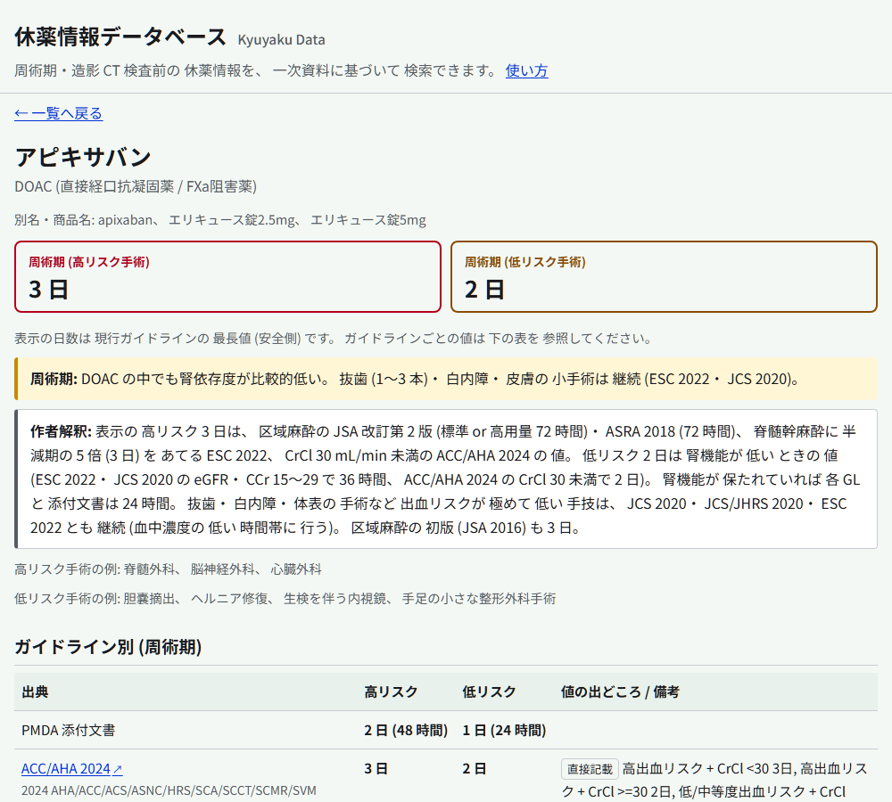
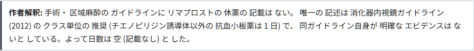
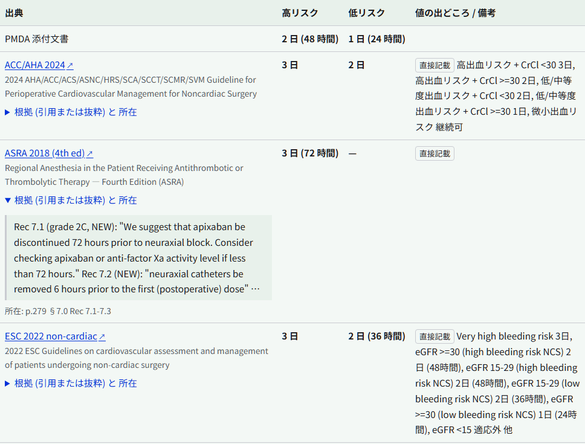
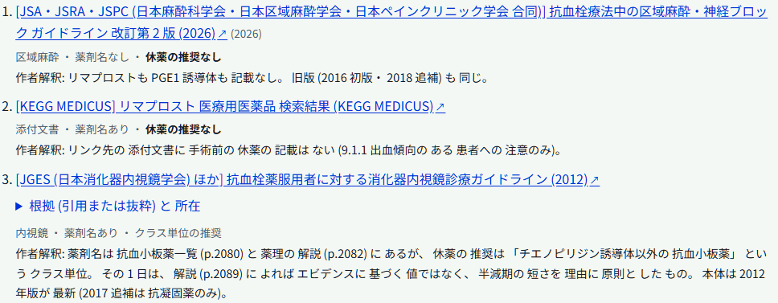
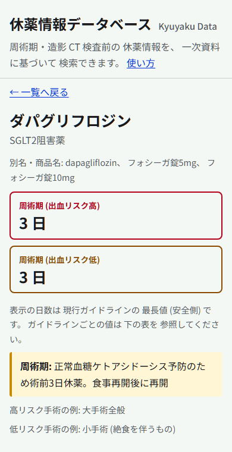

参照アプリの使い方
この参照アプリでは、手術・処置の前や造影 CT 検査の前に休薬が必要な薬について、学会ガイドラインや PMDA 添付文書などの一次資料に基づく情報を調べられます。登録・ログインは不要で、スマートフォンでも使えます。
1. 薬を探す
画面上部の検索欄に薬の名前を入力すると、入力するそばから一覧が絞り込まれます。
- 一般名・商品名・別名・後発品名のどれでも検索できます (例: 「エリキュース」でアピキサバンが出ます)。
- 名前の一部だけでも検索できます。
- ひらがな・半角カナ・英字でも検索できます (例: 「えりきゅーす」「apixaban」)。
- 多少の打ち間違いや表記ゆれでも見つかります (例: 「アスピリソ」→ アスピリン、「リバロキサバン」→ リバーロキサバン、「プラビクス」→ クロピドグレル)。長音 (ー) の有無や濁点の違いも吸収します。
- 結果は 一致度の高い順に並びます。商品名で一致した場合は「○○ に一致」、打ち間違いを補って見つけた場合は「○○ に近い名前」と表示されます。配合剤などで 1 つの商品名が複数の薬に当たる場合は、すべて表示されます。
- 「DOAC」「SGLT2」のように 薬効分類の名前でも検索できます。

見つからないときは「もしかして」
何も当たらない場合は、近い名前の候補を「もしかして」として表示します。候補を押すと、その名前で検索し直します。

URL で検索する
https://numero-uno-jpn.github.io/kyuyaku-data/?q=アスピリン のように URL の末尾に ?q=薬の名前 を付けて開くと、検索済みの状態で表示されます。検索欄に入力すると、アドレス欄の URL も自動で変わるので、そのまま共有やブックマークに使えます。
2. 薬効分類で絞り込む
検索欄の下のボタン (抗血栓薬、糖尿病薬、降圧・利尿薬など) を押すと、その分類の薬だけが表示されます。もう一度押すか「すべて」を押すと解除されます。検索欄と組み合わせることもできます。

3. 一覧の見方
カードには薬の一般名・分類と、休薬日数のバッジが表示されます。
- 周術期(高) 3 日 リスクの高い手術・処置の前の休薬日数
- 周術期(低) 1 日 リスクの低い手術・処置の前の休薬日数
- 造影CT 2 日 造影 CT 検査の前の休薬
- 「休薬不要」は休薬の必要がない (継続してよい) という意味、「休薬記載なし」は一次資料に休薬日数の記載がない薬です (休薬が必要かどうかも含め、詳細ページの補足と作者解釈をご覧ください)。
ここに表示される日数は、現行版のガイドラインの中で いちばん長い値 (安全側) です。ガイドラインに記載がなければ PMDA 添付文書の値を使います。
4. 薬の詳細ページ
カードを押すと、その薬の詳細ページが開きます。ブラウザの「戻る」で一覧に戻れます (絞り込みはそのまま残ります)。

- 休薬日数を大きく表示します (一覧と同じ安全側の値)。
- 補足 (黄色の欄) に、用量・腎機能による違いや、ガイドライン改訂の要点などを記載しています。
- 作者解釈 (灰色の枠) は、根拠を見直した薬に付けています。表示の日数がどの資料のどの記述から来たか、手術の資料がない、別の場面 (内視鏡・区域麻酔) の値を当てはめた、などの事情を作者が説明したもので、原典の記述ではありません。
- 高リスク / 低リスク手術の例を載せています。何を高リスクとするかは薬 (出血・血栓など休薬の理由) やガイドラインごとに異なるので、目安としてご覧ください。

5. ガイドライン別の値と根拠
「ガイドライン別」の表には、資料ごとの休薬日数が並びます。資料によって値が違うことが一目で分かります。

- 出典名を押すと、一次資料 (PDF は該当頁) が新しいタブで開きます。略称の下に、ガイドラインの正式名を表示しています。
- 値の出どころのラベル:
- 直接記載 ガイドラインがその薬の値を直接書いている
- クラス推奨 ガイドラインは「SGLT2 阻害薬」のように薬の種類単位で推奨しており、その値をこの薬に当てはめた
- 計算値 ガイドラインの「半減期の N 倍」などのルールから計算した値
- 備考に、用量別・腎機能別などの条件を要約しています。
- 「根拠 (引用または抜粋) と所在」を押すと、一次資料からの引用または抜粋と、資料のどこに書かれているか (頁・表) が表示されます。長いものは抜粋 (「 … 」は中略) で、一部に参考資料・作者による注記を含みます。正確な記載は原典で確認してください。
6. 出典
ページの下部に、その薬の出典 (ガイドライン・添付文書・文献) を一覧で載せています。リンクは新しいタブで開きます。「根拠」を開くと、引用または抜粋・英文の和訳・所在が表示されます。
根拠を見直した薬では、出典ごとに作者解釈を付けています。
- 1 行目は区分です: その資料の場面 (手術・区域麻酔・内視鏡・添付文書など)、薬剤名の有無、休薬の推奨が薬剤名でのものかクラス単位のものか。
- 休薬の推奨なし とある出典は、確認したが休薬の記載がなかった資料です。休薬の根拠ではありません。
- 「作者解釈:」に続く文は作者の説明で、原典の記述ではありません。

7. コピー・共有
- 内容をコピー: 薬の名前・休薬日数・補足・作者解釈 (ある場合)・ガイドライン別の値・出典をテキストでコピーします。カルテや院内の資料に貼り付けるときに便利です (末尾に出典の表示が付きます)。
- リンクをコピー: その薬のページの URL をコピーします。URL を開くと直接その薬のページが表示されるので、共有やブックマーク、スライドへの掲載に使えます。
8. スマートフォンで使う
スマートフォンのブラウザでも同じように使えます。ホーム画面に追加しておくと、すぐに開けます。端末がダークモードの場合は暗い配色で表示されます。

9. 使うときの注意
- このアプリの情報は意思決定を支援するための 参考情報 です。休薬・再開の最終判断は、患者の状態・手術の内容・血栓と出血のリスクを踏まえて担当の医療者が行ってください。
- 冠動脈ステント留置後の抗血小板薬など、休薬しないことが推奨される 場合があります。日数だけで判断せず、補足とガイドラインの推奨文を確認してください。
- ガイドラインや添付文書の改訂から反映まで最大 3 か月程度かかることがあります (月 1 回、作者が確認・承認して反映するため)。データの版と更新日はページ下部に表示しています。
- 誤りに気づいた場合は、誤りの報告(新しいタブで開く) から、根拠となる資料と頁を添えてお知らせください。